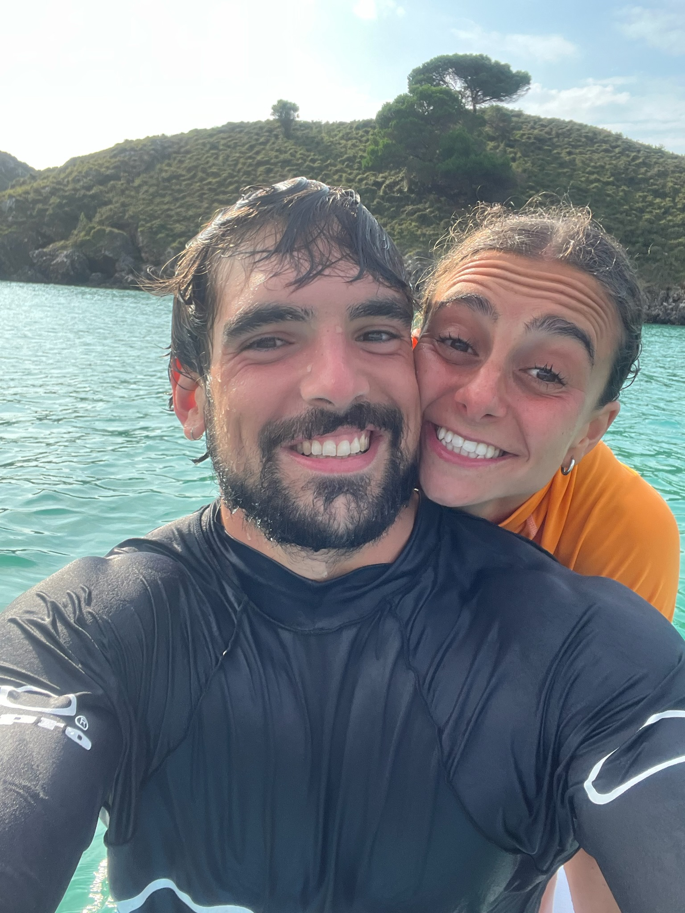
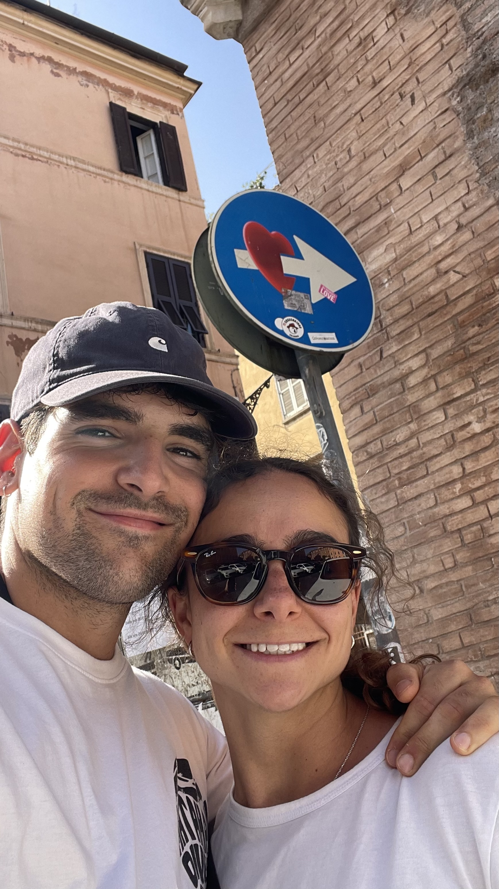
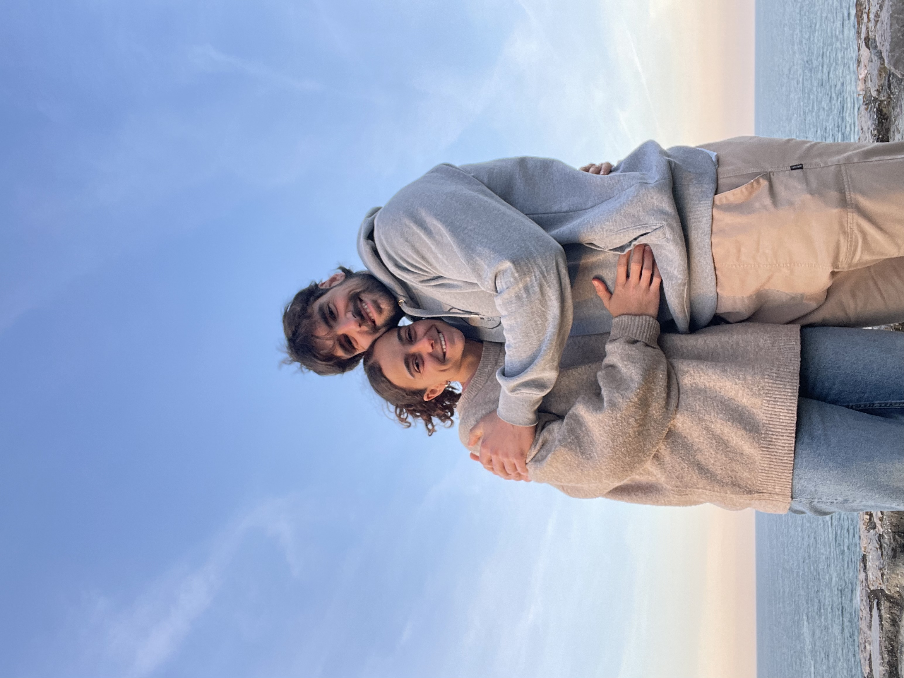

Para ti
Tengo un regalo para ti.
Pero esta vez no quería comprarte algo.
Quería regalarte algo que pudiéramos recordar.
Desliza para descubrirlo
Para ti
Pero esta vez no quería comprarte algo.
Quería regalarte algo que pudiéramos recordar.
Paso 1
Un fin de semana fuera.
Tú y yo.
Un lugar diferente, un hotel bonito, algo rico para cenar y tiempo para nosotros.
Pero eso no es todo.

Paso 2
El plan incluye hacer algo que a ti te encanta…
y que yo, digamos, no elegiría voluntariamente.
Frío.
Nieve.
Botas incómodas.
Y dos tablas debajo de los pies.
Sí.
Vamos a esquiar.
Paso 3
El regalo no es solo el viaje.
Es que voy contigo.
Voy a ponerme unos esquís.
Voy a aprender.
Probablemente me caeré.
Probablemente me arrepentiré varias veces durante el día.
Y probablemente tú te reirás bastante.
Pero quiero aprender contigo.
Porque sé que a ti te hace ilusión.
Y quiero vivirlo contigo.

Paso 4
Nos vamos un fin de semana a la nieve.
Vuestro destino
Fechas por decidir juntos
Esquiaremos en Candanchú
El itinerario
Viernes
Llegamos, dejamos las cosas y empieza el fin de semana.
Sin prisas.
Cena y noche juntos.
Sábado
Desayuno.
Nos ponemos las botas.
Tú esquías. Yo intento aprender.
Y empieza oficialmente el reto.
Después: ducha caliente, descanso y algo rico para cenar.
Domingo
Segundo día de nieve.
Unas últimas bajadas.
Y vuelta a casa.
Con suerte, todavía caminando los dos.


Y ahora sí.
Este es tu regalo.
No puedo prometerte que vaya a convertirme en esquiador.
Ni siquiera puedo prometerte que no proteste un poco.
Pero sí puedo prometerte algo:
voy a hacerlo contigo.
Porque sé que te gusta.
Porque quiero que tengamos más experiencias juntos.
Y porque algunos regalos no se compran.
Se viven.
Te quiero.
— Joe